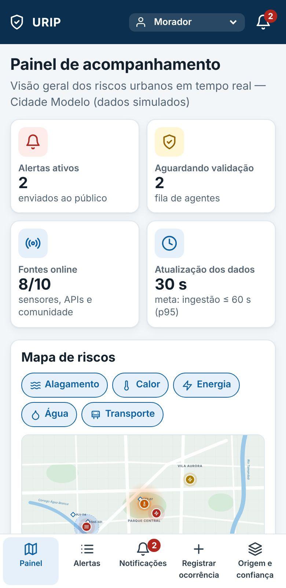
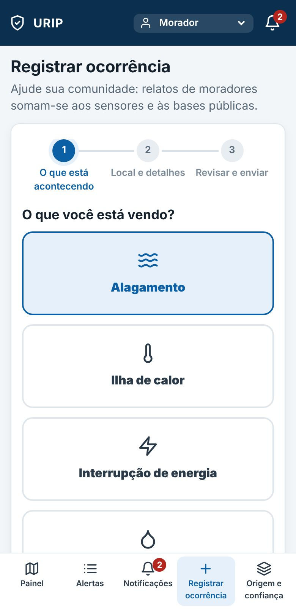
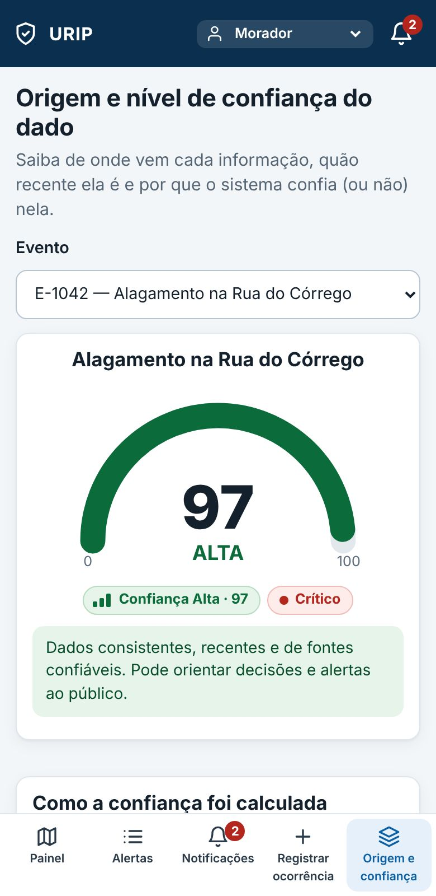

Documentação técnica e protótipo.
| Nome completo | RM |
|---|
| Protótipo | {{LINK_PROTOTIPO}} |
| Repositório (GitHub) | {{LINK_REPOSITORIO}} |
| Vídeo de demonstração | {{LINK_VIDEO}} |
Este documento reúne os requisitos, os diagramas UML, a arquitetura e a descrição do protótipo da nossa solução para o tema Urban Risk Intelligence Platform.
Alagamentos, ilhas de calor e quedas de energia, água ou transporte acontecem com frequência nas cidades e pesam mais sobre quem tem menos condições de se proteger. Os dados sobre eles existem, mas ficam espalhados: sensores da prefeitura, bases públicas, avisos das concessionárias e mensagens em grupos de WhatsApp. Em geral não dizem de onde vieram nem se dá para confiar neles. O morador fica sem saber o que é verdade, o agente da Defesa Civil perde tempo separando boato de ocorrência real, e o operador de um serviço muitas vezes só fica sabendo do problema pela imprensa.
A URIP junta essas fontes num fluxo só: o dado chega, é validado, recebe um nível de risco e um nível de confiança, e a combinação dos dois define quem será avisado e por qual canal. A ideia principal é separar "quão grave é" de "quanto confiamos na informação". Se a evidência é forte, o alerta sai rápido. Se há dúvida, um agente valida antes de avisar a população. Assim reduzimos falsos alarmes sem atrasar os alertas verdadeiros (regras RN-01 a RN-04).
| Indicador (do desafio) | Meta mensurável | Onde se observa |
|---|---|---|
| Tempo de atualização dos dados | Medição → painel em ≤ 60 s (p95); dado → notificação de alerta em ≤ 60 s (p95), típico ≤ 10 s | RNF01 · KPI do painel · Análises · Simulador |
| Qualidade dos alertas | ≥ 90% de alertas públicos procedentes; falsos positivos ≤ 10%; todo alerta exibe origem e confiança | RF05, RF11 · Análises · Origem e confiança |
| Facilidade de uso | Registrar ocorrência em ≤ 3 etapas e ≤ 60 s; SUS ≥ 80; WCAG 2.1 AA | RNF05 · Registro comunitário |
Dentro do escopo: ingestão e normalização, validação, cálculo de confiança e risco, ciclo de vida do evento, alertas e notificações, painel, registro comunitário, validação por agentes, análises, saúde das fontes e gestão de privacidade. Fora do escopo desta entrega: previsão meteorológica própria, integrações reais com APIs de terceiros (simuladas no protótipo), autenticação corporativa real e envio real de SMS/push.
Definimos três perfis principais (morador, agente da Defesa Civil e operador de serviço público). Incluímos ainda uma persona idosa, para lembrar que nem todo usuário tem familiaridade com aplicativos. As personas são fictícias e foram montadas a partir de situações comuns descritas no enunciado.
Quer: ser avisada a tempo de proteger a família e chegar ao trabalho; saber o que fazer; ajudar a vizinhança.
Problemas hoje: já foi surpreendida por alagamento; recebe “alertas” de grupos de mensagens sem saber se são verdadeiros; não vê para quem reportar.
Como a plataforma ajuda: recebe alertas da sua área (T06), entende a gravidade e a confiança (T04, T05), registra ocorrências em poucos toques (T07) e controla seus dados (T11).
Quer: priorizar equipes onde o risco é maior; evitar deslocamentos por falso positivo; registrar decisões.
Problemas hoje: informações em planilhas, telefone e redes sociais; não sabe a origem nem a idade do dado; sobrecarga em dias de chuva.
Como a plataforma ajuda: fila de validação priorizada por risco e confiança, com prazo (T08); origem e confiança de cada dado (T05); histórico e ciclo de vida (T04); análises (T09).
Quer: comunicar interrupções e prazos de religação; entender o impacto na população; cruzar sua telemetria com relatos.
Problemas hoje: descobre falhas pela imprensa; sensores sem contexto; dificuldade de saber se a própria API está chegando.
Como a plataforma ajuda: acompanha eventos de serviços essenciais (T02, T03), saúde e latência das fontes (T10) e indicadores (T09).
Quer: receber avisos simples e saber se deve sair de casa.
Problemas hoje: textos longos, ícones sem rótulo, dependência de internet.
Como a plataforma ajuda: SMS para alertas críticos; textos curtos e claros; risco sempre com palavra, não só cor; alvos de toque grandes; consentimento explícito (T01, RNF05).
Prioridade Alta: essencial para o produto funcionar. Média: importante, mas o sistema funciona sem ele. A coluna “Tela” indica onde o requisito aparece no protótipo (seção 9).
| ID | Descrição | Prioridade | Tela |
|---|
Classificamos os requisitos pelas características da ISO/IEC 25010. Os itens exigidos no enunciado ficaram assim: tempo de atualização (RNF01), disponibilidade (RNF02 e RNF03), escalabilidade (RNF04), usabilidade (RNF05) e segurança/LGPD (RNF06 a RNF08). A ISO 25010 não tem uma categoria própria para LGPD, então tratamos o tema dentro de Segurança (confidencialidade e responsabilização).
| ID | Característica ISO 25010 › subcaracterística | Requisito (mensurável) | Verificação / onde aparece |
|---|
Estas regras estão implementadas em js/engine.js e são as mesmas que o protótipo usa nas telas. Os pesos e limiares (0,35, 0,25 etc.) foram escolhidos por nós com base em raciocínio, não em dados reais, e por isso ficaram fáceis de alterar (RNF09). Numa versão real, precisariam ser calibrados com histórico.
| Componente | Como é calculado |
|---|---|
| F · Fonte (35%) | Maior confiabilidade entre as fontes do evento. Sensor municipal calibrado e API oficial: 85–95 · satélite: 80 · comunidade verificada: 55 · comunidade anônima: 35 · verificação de agente: 100. |
| Fr · Frescor (25%) | Idade da leitura mais recente: ≤ 5 min = 100 · ≤ 15 min = 80 · ≤ 60 min = 50 · ≤ 180 min = 25 · acima = 0. Para fenômenos lentos (ilha de calor) a janela é multiplicada por 3. |
| Co · Corroboração (25%) | Número de origens independentes que concordam: 0 = 0 · 1 = 25 · 2 = 65 · ≥ 3 = 100. Cada sensor/API distinta conta como uma origem; relatos da comunidade contam como 1 origem (1–2 relatos) ou 2 origens (≥ 3 usuários distintos). |
| Q · Qualidade (15%) | Média da qualidade das observações (0–100): valor fisicamente plausível, sensor calibrado, coerência com vizinhos, foto consistente (sem EXIF contraditório). |
Alta C ≥ 75, pode orientar decisões e alertas ao público. Média 50 ≤ C ≤ 74, há evidências, mas falta corroboração ou dado recente; exige validação humana para alerta público. Baixa C < 50, dado isolado, antigo ou pouco confiável; não gera alerta público. A origem do dado e a decomposição de C são sempre exibidas (T05).
| Componente | Como é calculado |
|---|---|
| S · Severidade | Alagamento (nível da água): < 5 cm = 10 · 5–15 = 40 · 16–30 = 70 · > 30 = 100. Ilha de calor (temperatura de superfície): < 32 °C = 10 · 32–36 = 40 · 37–40 = 70 · > 40 = 100. Energia, água, transporte: serviço crítico afetado (hospital, UPA) = 100 · > 5.000 afetados ou > 4 h = 75 · ≥ 500 afetados ou ≥ 1 h = 50 · demais = 20. |
| E · Exposição | E = mín(100, população em 500 m ÷ 100 + 20 × locais sensíveis), em que local sensível é escola, creche, hospital/UPA ou asilo. |
| T · Tendência | Subindo = 100 · Estável = 50 · Diminuindo = 10 (comparação das últimas leituras). |
Níveis: Crítico R ≥ 80 · Alto 60–79 · Moderado 40–59 · Baixo < 40. Ordem de prioridade (RN-09): risco decrescente; em empate, confiança decrescente.
| Risco | Confiança Alta (≥ 75) | Confiança Média (50–74) | Confiança Baixa (< 50) |
|---|---|---|---|
| Crítico | Alerta público imediato (push + SMS) | Alerta público com selo “em verificação” + validação prioritária | Somente agentes, prioridade máxima |
| Alto | Alerta público (push) | Alerta preliminar a agentes; público após confirmação | Fila de validação |
| Moderado | Aviso informativo no aplicativo | Aviso in-app após confirmação | Fila de validação |
| Baixo | Registro no painel, sem notificação (descarte por TTL se não corroborado) | ||
| ID | Regra |
|---|---|
| RN-05 | Validação e prazos. O evento confirma sozinho quando C ≥ 75; com risco Crítico, a confirmação é provisória a partir de C ≥ 60 (mantém selo “em verificação”). Caso contrário aguarda agente. Prazo (SLA) de validação: Crítico 5 min · Alto 10 · Moderado 30 · Baixo 60. Agente pode confirmar (sua verificação vira uma fonte de confiabilidade 100) ou descartar com motivo. |
| RN-06 | Encerramento. O evento vai para Encerrado quando os indicadores ficam abaixo do limiar por 3 ciclos consecutivos de leitura, ou por decisão do agente. Novo episódio no mesmo local cria um novo evento vinculado. |
| RN-07 | Escalonamento. Se o nível de risco sobe acima do último nível alertado e a matriz RN-04 exige alerta público, o evento retorna a Alerta emitido e reemite a notificação. Reduções de risco geram apenas atualização, sem novo alerta. |
| RN-08 | Privacidade. Coletar somente o necessário (bairro de interesse; localização apenas aproximada, ~100 m, e só com consentimento). Autor de relato pseudonimizado; EXIF removido; retenção de relatos por 90 dias. Alertas críticos são enviados por proteção da vida (LGPD, art. 7º, VII) e não podem ser desativados; demais canais dependem de consentimento. |
| RN-09 | Ordenação. Listas e painel ordenam por risco (R) decrescente e, em empate, por confiança (C) decrescente; eventos ativos antes de encerrados. |
Fluxo completo: dado recebido (sensor, base pública ou registro comunitário) → validação → classificação de risco → notificação ao usuário. Os participantes correspondem aos componentes da arquitetura (seção 8). Mensagens com seta cheia são síncronas; setas abertas, assíncronas; tracejadas, retornos.
{{SVG:sequencia}}| Passos | O que acontece | Regras / requisitos |
|---|---|---|
| 1–2 | A fonte envia o dado ao Gateway de Ingestão, que autentica a fonte (token/mTLS) e normaliza o formato; para relatos comunitários, o autor é pseudonimizado já aqui. | RF01–RF03 · RNF06, RNF08 |
| 3–4 | O Serviço de Validação checa esquema, plausibilidade física, duplicidade e se a fonte está ativa. Se inválido, o dado é rejeitado e registrado (e a saúde da fonte é afetada). | RF04 · RF14 |
| 5–6 | A Gestão de Eventos correlaciona o dado a um evento existente (mesmo tipo e área) ou cria um novo, persistindo a observação. | RF07 · RN-06 |
| 7–8 | O Motor de Regras calcula confiança C e risco R e devolve a decisão da matriz. | RF05, RF06 · RN-01…04 |
| 9 | A Gestão de Eventos transita o estado: Reportado → Em validação → Confirmado (automático se C ≥ 75; senão aguarda agente). | RF07 · RN-05 |
| 10–12 | Se a matriz exige alerta público, o Serviço de Notificação seleciona destinatários da área (por preferências e consentimento, sem expor identidade) e envia push/SMS/in-app com origem e confiança. | RF08, RF11, RF12 · RNF01, RNF08 |
| 13 | Com risco Alto e confiança Média, notifica apenas agentes (alerta preliminar) para validação; com confiança Baixa, o evento fica na fila sem notificar o público. | RF13 · RN-04 |
Estados, eventos de transição, condições (entre colchetes) e ações. Estados finais: Encerrado e Descartado. A implementação rejeita qualquer transição fora deste diagrama (URIP_ENGINE.TRANSITIONS).
| De | Para | Evento | Condição (guarda) | Ação |
|---|---|---|---|---|
| ● (início) | Reportado | dadoRecebido | dado passou pela ingestão | criar evento; normalizar e deduplicar |
| Reportado | Em validação | dadoRecebido | dado válido (RF04) | correlacionar; calcular confiança |
| Reportado | Descartado | dadoInválido | fora de plausibilidade, spam ou fonte offline | registrar motivo |
| Em validação | Confirmado | confirmar | C ≥ 75 (Crítico: C ≥ 60) ou agente confirma | aplicarPolítica (RN-04) |
| Em validação | Descartado | descartar | agente rejeita, duplicado, ou C < 30 sem corroboração após 30 min | registrar motivo |
| Confirmado | Alerta emitido | emitirAlerta | matriz RN-04 exige alerta público | notificar público (push/SMS/in-app) |
| Confirmado | Em monitoramento | semAlertaPúblico | RN-04: informativo ou registro | aviso in-app opcional |
| Alerta emitido | Em monitoramento | entregaConcluída | notificações entregues | acompanhar a cada ciclo |
| Em monitoramento | Alerta emitido | riscoEscalou | nível de risco > último nível alertado (RN-07) | reemitir alerta |
| Em monitoramento | Encerrado | normalizou | indicadores abaixo do limiar por 3 ciclos, ou agente encerra (RN-06) | arquivar e consolidar |
Apresentação, aplicação/negócio e dados, com as fontes externas (sensores, APIs públicas, comunidade) e os provedores de entrega. Em destaque dourado (cadeado): onde a proteção de dados pessoais atua. Notificação e processamento de eventos ficam na camada de aplicação.
{{SVG:arquitetura}}| Componente | Responsabilidade | Requisitos / diagramas |
|---|---|---|
| Fontes externas | Sensores IoT (MQTT/LoRaWAN), APIs e bases públicas (Defesa Civil, concessionárias, operadora de transporte, satélite) e comunidade (app/web). Não fazem parte do sistema; entram apenas pela Ingestão. | RF01–RF03 · seq. 1 |
| Apresentação | PWA do morador, painel de agentes/operadores e portal do titular (LGPD). Atualização em tempo real via WebSocket/SSE. Todo acesso passa pelo API Gateway. | RF09–RF18 · RNF05 |
| API Gateway e autenticação | OIDC, MFA para agentes, RBAC, WAF, limitação de taxa, TLS 1.3. Primeiro ponto de proteção de dados pessoais. | RF17 · RNF06 |
| Ingestão e Normalização | Adaptadores por protocolo; autenticação de fonte; pseudonimização do autor; remoção de EXIF. | RF01–RF03 · RNF08 |
| Validação de Dados | Esquema, plausibilidade física, duplicidade, calibração e fonte ativa. | RF04 · seq. 3–4 |
| Processamento de Eventos | Broker de mensagens durável, particionado por região, com reentrega, idempotência e fila de mensagens mortas; desacopla ingestão de processamento e absorve picos. | RNF02–RNF04 |
| Motor de Regras | Calcula C e R e aplica a matriz de decisão; pesos e limiares configuráveis. | RF05, RF06 · RN-01…04 |
| Gestão de Eventos | Máquina de estados, correlação de dados, histórico, SLA de validação. | RF07, RF13 · diagrama de estados |
| Serviço de Notificação | Seleciona audiência por área, preferências e consentimento; envia por push, SMS, e-mail e in-app via provedores; mede tempo de entrega. | RF08, RF12 · seq. 10–12 |
| Serviço de Privacidade | Consentimento granular, retenção e descarte, direitos do titular, trilha de auditoria, anonimização. | RF16 · RNF07, RNF08 |
| Análises e Observabilidade | Indicadores, saúde das fontes, métricas, logs, tracing e alarmes; base da autoescala. | RF14, RF15 · RNF01, RNF02 |
| Camada de dados | Série temporal (leituras), relacional + geoespacial (eventos, usuários), objetos (fotos sem EXIF), cache, auditoria imutável e cofre de chaves/backups criptografados. | RNF02, RNF06–RNF08 |
Optamos por um protótipo funcional em HTML, CSS e JavaScript, sem bibliotecas externas. Ele aplica as regras da seção 5: quando o agente confirma um evento, quando alguém registra uma ocorrência ou quando disparamos o simulador, os valores são recalculados e as notificações aparecem. São 12 telas (o registro comunitário tem 3 etapas e uma tela de confirmação). Os dados são todos simulados.
index.html em qualquer navegador (ou rode python3 -m http.server na pasta e acesse http://localhost:8000); não há instalação nem build. Link de deploy e repositório: ver primeira página. Para trocar de perfil, escolha Morador, Agente ou Operador na entrada ou no seletor do topo. Testes das regras: node tests/engine.test.js.No celular o menu lateral vira uma barra inferior. Exemplos: Painel, Registro comunitário e Origem e confiança.



Toda tela tem requisitos que a justificam, e todo requisito funcional aparece em ao menos uma tela. A matriz mostra também em que ponto dos diagramas e da arquitetura cada tela se apoia.
| Tela | RF | RNF | Regras | Sequência / Estados | Componente (arquitetura) |
|---|
| Item exigido pelo desafio | Onde está |
|---|---|
| Origem e nível de confiança visíveis | T05 (tela dedicada) + selo de confiança em T02, T03, T04, T06, T07b, T08; origem por observação em T04 e T05 |
| Painel de acompanhamento (mapa/visão geral) | T02 |
| Lista/detalhe de alertas | T03 e T04 |
| Central de notificações | T06 |
| Registro comunitário de ocorrência | T07 (3 etapas) e T07b (confirmação) |
| Tempo de atualização, disponibilidade, escalabilidade, usabilidade, segurança/LGPD | RNF01, RNF02–03, RNF04, RNF05, RNF06–08 (seção 4); arquitetura (seção 8); T02/T09/T10, T11 |
tests/engine.test.js) cobrem RN-01 a RN-04, limites de níveis, SLA e a máquina de estados, inclusive o exemplo trabalhado da seção 5.